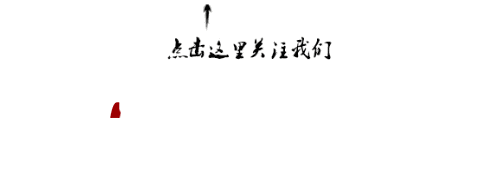

收录于合集

简
** 赵穗生**
美国丹佛大学美中合作中心主任
美国总统特朗普上台后，其亚洲政策基本围绕朝鲜问题展开。这次亚洲之行则给了他一次全面审视亚洲的机会。他能意识到，亚洲议题并不像他所想象的那么简单，各国的关注点也大不相同。尤其是他所关注的朝鲜议题——当然这个问题很重要，但亚洲国家关注的很多问题是远远超过该议题的。
说到亚洲目前最主要的关切，在我看来，一个是地区的稳定和持续发展，一个是中国的崛起。中共十九大以后，中国国家领导人提出来的这些富有战略性的愿景，对周边国家乃至更远地区的影响同样深远。另外，特朗普此次12天的亚洲之行不但包括像中国、日本、韩国等牵涉到热点议题的国家，也包括参加亚太经合组织会议和东亚峰会，这些会议同样也会反映亚洲的关切。
“只要踏上中国，就能感受到重要性”
目前特朗普没有明确的亚洲政策，所以这次访问对于他重新思考亚洲政策，是一次非常重要的机会。与此同时，美国国内议题正让他焦头烂额，无论是“通俄门”事件、税改问题、明年的中期选举，以及党内外的矛盾、政府内部的协调，都会在他的亚洲行中不断干扰他。但或许正因如此，他亦可以转移国内的注意力到外交方面，所以不排除会有很多作秀成分。
但对中国来讲，只要特朗普踏上中国的土地，就会感受到中国的重要性，中国的复杂性，中国的活力，跟中国打交道的必要性。特朗普上台的时候，大家一度觉得中美关系会出现很多龃龉，但在海湖庄园实现元首会晤后，似乎立刻就把很多矛盾冲淡了。一年来中美两国领导人通话有9次，这种高频率的私人交流，对于很多问题的解决提供了很好的渠道。
从这次访问结果来看，总体显示出中国能够更加积极主动发展对美关系，并愈发占有主导性。这次中方给足了特朗普面子，但其实并没有给出里子，也就是说没有做出实质性让步。美国主流媒体则对特朗普持有批评意见，认为他没有从中国拿到什么实质的东西。这也说明他的访问准备工作做得不够充分，都是临时根据访问情况发表讲话，而不是经过深思熟虑地考虑。美国媒体认为他这些即兴发言令美国失去了与中国进行有效沟通的机会。
对于特朗普此前关注的两个问题——朝核与经贸，我认为通过一次访问很难达到彻底解决。但是，通过跟各国高层面对面的交流，他会更理性地思考这些问题，也会把这些问题提到最高层次上加以全面考虑，然后在政策层面上反映出来。
谈到对华决策，特朗普目前的策略没有一条主线，而是变化不断。虽然奥巴马时候也有变化，但起码还有一条比较重要的主线，就是合作和冲突并存，以合作来避免冲突。特朗普似乎没有搞清楚什么是冲突，什么是合作，他只强调依靠所谓的结果导向来解决问题。我认为他也不会提出所谓的概念或者口号，因为他根本不具备这种意识，所有的事务对他而言都是“结果导向”的，在他看来问题解决了，这个框架就建立起来了。但对中国人来说，可能更习惯于先有框架、先有原则问题，再具体解决问题。对特朗普来讲，他要拿出的是能够让选民下一次投票给他的成果，比如让美国牛肉出口到中国，这样养牛户们就会投他一票。
特朗普在日本提到的“自由且开放的印度- 太平洋”战略被外界关注，甚至有声音认为这个会不会替代过去的“亚太再平衡”。但事实上，“印太”这个概念早在奥巴马时期就有人提出。在亚太地区，最大两个崛起国就是中国和印度，而随着印度东进、俄罗斯西进，主要国家在亚太和印度洋地区的利益是相互交织的。
由于现在大家最关注的大国是中国，所以很多概念被视作是为了针对中国崛起而提出的。但我认为，不能狭义地去认为这个战略就是为了扼制中国，因为这里面同样包括怎么跟中国和平相处。虽然它有防范中国的一面，但也有如何同中国合作的一面。
另一个备受关注的是贸易问题，因为该议题是特朗普竞选时最重要的竞选纲领之一，他也将对华贸易问题当做其对华政策的重点。但是，特朗普目前的对华贸易政策似乎是建立在一种扭曲的、简单化的理解之上的。他只强调所谓的贸易逆差问题，但这个逆差是怎么形成的，结构是怎样的，所引发的结果是什么，似乎都忽略掉了。这种情况下，他谈到贸易问题时，仅仅谈的是中美贸易中很表层的一面。加上，特朗普是很容易受到他人影响的人，因为他自己在这方面的知识较缺乏。所以，我们也应当关注白宫究竟哪些人可以影响到他。
这次签署了空前的经贸大单，但其实其中很多是备忘录(MOU)的形式，未来的进展还需要观望。特朗普回国以后，同样可能会遭遇对华关系的反弹，比如国会关于知识产权方面的调查，所以也可能会变脸。因为他的很多出访观点并没有完全反应美国政府机构的意见，中方对此也要有充分的认识。
至于朝核问题，我觉得目前的解决方案近乎于零。现在朝鲜方面可以说是软硬不吃，美国这么多年以来的政策也毫无成效。现在所谓用制裁的方法打压，但这一定需要中国的配合。此外，特朗普在朝核问题上的表态总是前后矛盾，一会儿说要“摧毁朝鲜”，一会儿又说可以上谈判桌，到现在为止没有任何新的东西提出来。
“中国的责任、担当应与国力相匹配”
今年10月以来，我接受很多美国媒体的采访，他们最常问的一个问题是：美国人为什么要关注中共十九大?我告诉他们，中国崛起以后，其内政已经不仅是单纯一个国家的内政了，中国的政治体制、权力分配，中国的经济发展道路会给全世界都带来影响。现在所谓的中国模式是跟美国截然不同的发展道路，这种道路上的竞争或许成为未来的亮点。
中共十九大的报告明确指出，“没有哪个国家能够独自应对人类面临的各种挑战，也没有哪个国家能够退回到自我封闭的孤岛。”此前中国领导人也多次强调要坚持改革开放，这个方向是对的，中国打开这个门就不可能关上。
在我看来，中国强起来的实际表现恰恰在外交方面。中国作为世界第二大经济体，你要有底气，也要有资源，才能负责任，才可以敢担当。作为一个崛起的大国，中国将来必然会承担更多的国际责任，负起更多的领导作用。但你的国际责任与担当在很大程度上也要和国力相匹配，不能超越国力。
这意味着，中国要选择性承担国际责任和义务，不能犯美国曾经犯过的错误。美国作为一个“世界警察”，为世界做出很多贡献，但也把自己掏空了。中国现在还没有到这种程度。而且，正因为中国是现有国际秩序的受益者，所以更要反哺国际社会，在承担国际责任的同时，也要在道义上站得住脚，即对于大国小国要公平对待，而不是追求扩张。
特朗普上台以后，瓦解了美国此前建立的种种国际秩序，包括他所谈的“美国第一”、退出“跨太平洋合作伙伴关系协定”(TPP)、代表美国退出《全球气候协议》、要重新谈判北美自由贸易区等等。这种情况下，中国的确应当扛起一部分大旗。美国利用自己的霸权地位做的一些有损于很多国家的事情，中国要和美国一道来纠正这些事情。比如反恐领域，美国自伊拉克战争以来越反越恐，中美之间在这方面有很多共同利益，因为中国也有恐怖主义的担忧。而在难民救济的问题上，中国同样可以发挥作用。
中华人民共和国在建国之初是被排除在联合国之外的，换言之，中国并没有直接参与二战以后国际秩序的建立。因此，当许多国际秩序和规则被制定的时候，中国并不在桌子上，没能参与进来，中国的声音在很大程度上也没有充分反映出来。现在中国已经是全球第二大经济体，经济和军事实力在全球的配比都发生了变化。然而，中国在国际秩序中发出的声音没有相应的跟着变化。所以，中国应当要求发出更多声音，包括提高在国际货币基金组织、世界银行、国际贸易组织以及国际安全机构中的代表权，目前的代表权没能充分反映出中国作为大国的地位，但这种地位的上升并不意味着要改变游戏规则本身。
现在的游戏规则，其基本着眼点是依据两个原则界定的，一个是所谓的全球化原则；第二个是传统的主权国家原则。主权国家仍是国际秩序当中最基本的单位，但这种主权又要受到一定限制，包括关税壁垒的减少、贸易自由化等等。以上两个原则所界定的共同秩序，是中国可以接受的。所以我一直说，中国在国际秩序中要改变的不是游戏规则，而是制定规则中的地位。它的地位应该和中国上升的大国地位相匹配。
放眼未来的国际格局，一种可能性是中国超越美国，即中国成为全球最大经济体，这个可能性完全存在。但是，即使作为最大经济体，中国也不可能短时间内在国际影响力上超越美国。第二种可能性是，中国仍然不能超越美国，在相当一段时间要屈居老二地位，或者说美国在很大程度上仍会主导中美关系的走向。
中国是一个亚太大国，也是一个崛起的大国，所以要有全球布局，这里边牵涉的不光是地缘问题，也包括如何界定国家利益的问题。中国现在所要追求的利益首先是在国内发展，也就是中国很多年来坚持的“中国国内本身的发展就是对世界最大的贡献”。此外，也应该聪明合理地运用中国发展起来的能力维护自身在地区和全球的利益，同时又要承担作为一个崛起中大国所要承担的责任。我想，这应当成为中国未来外交战略的主线。
文章来源： 《凤凰周刊》2017年11月25日
筛选： Alfred 编辑： 沉安
声 明
国政学人微信公众平台系非盈利学术平台。建立初衷是方便广大学人进行学术研究，促进学术的传播和交流，不做任何商业用途。如有任何权利问题，请直接与我们联系。